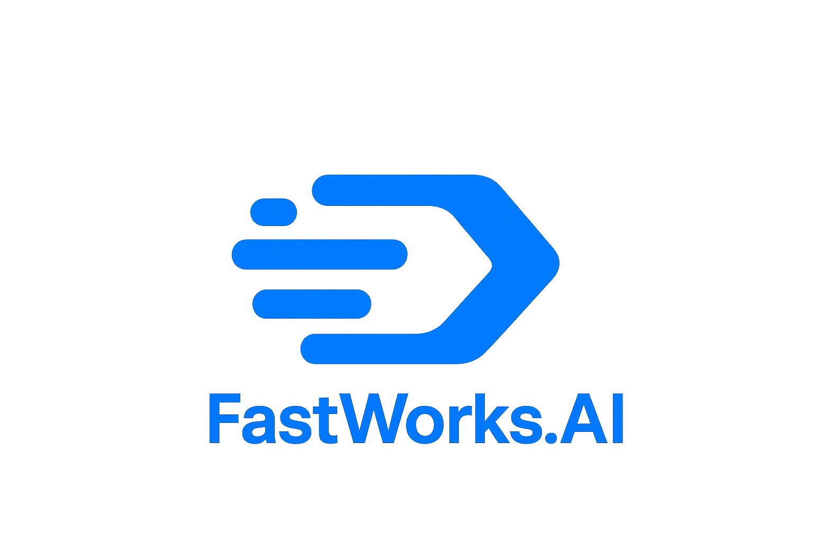

Who we serve


FASTWORKS.AI is built from the ground up for the Kingdom of Saudi Arabia. Our purpose is not just to deploy AI tools, but to build a national AI capability that is owned, governed, and shaped by the Kingdom.
Our mission is to make world-class AI accessible to every ministry, enterprise, and citizen in Saudi Arabia by delivering an integrated ecosystem of training, engineering, and digital platforms.
We unify AI aggregation, national talent development, and digital platforms into one ecosystem that powers Saudi Arabia’s innovation and growth.
Sovereign AI backbone that unifies LLMs, real-time data, APIs, and digital twins into one national intelligence platform with strong governance and observability.
Read MoreHands-on engineering teams that design, build, integrate, and operate AI solutions across ministries, giga projects, and enterprises using modern ML Ops & automation.
Read MoreNational upskilling programs that turn employees, students, and innovators into AI builders through bootcamps, labs, and real-world projects.
Read MoreSmart-city command systems, Super Apps, and strategic AI advisory that ensure AI is deployed safely, responsibly, and at scale.
Read More
Our engagement model is designed to quickly translate strategic intent into working AI capabilities, while building internal ownership and trust.
Vision 2030 alignment, stakeholder mapping, and prioritization of high-impact AI opportunities across your organization.
Target architecture, data strategy, and governance models tailored to your sector, regulatory environment, and sovereign requirements.
Rapid development of pilots and early platforms, paired with AI Academy programs for your internal teams.
Production rollout, operations, optimization, and continuous innovation using the FASTWORKS.AI ecosystem.
FASTWORKS.AI is more than a vendor. We operate as a strategic partner and ecosystem builder, aligned with Saudi Arabia’s digital, economic, and societal ambitions.